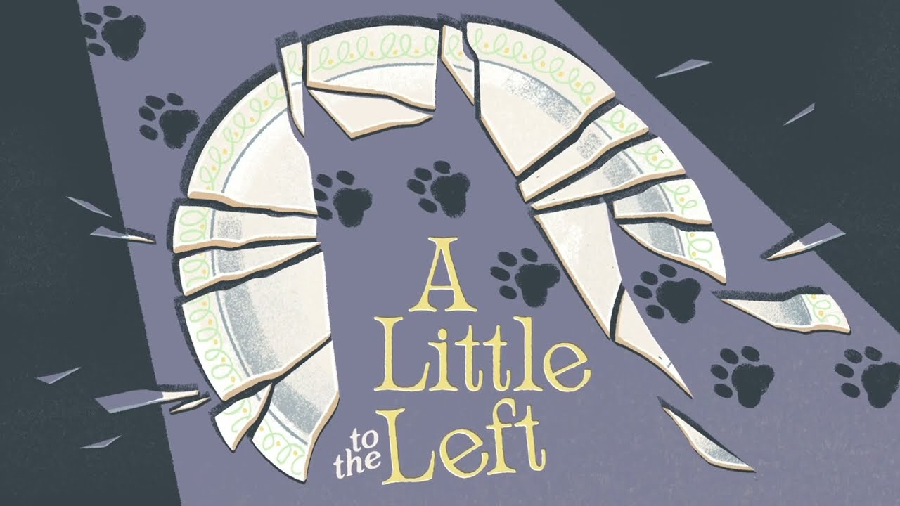
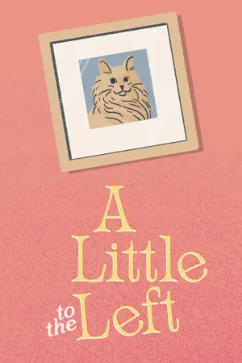

 STEAM REDIRECT
STEAM REDIRECT


A Little to the Left is a cozy puzzle game centered around organizing everyday household objects into satisfying arrangements. Players solve intuitive yet clever puzzles by sorting, stacking, and aligning items in visually pleasing ways. With its relaxing atmosphere, charming art style, and light humor, the game offers a calming experience that rewards attention to detail.
Minimum specifications needed
OS Windows 7 (SP1+) / Windows 10
Processor 1.8 GHz or faster
Memory 2 GB RAM
Graphics DirectX 11.0 compatible video card
DirectX Version 11
Storage 1250 MB available space
Sound Card Any
* Low requirements make it run on almost any PC.
A Little to the Left delivers a refreshing puzzle experience that stands out through simplicity and creativity. Instead of relying on complex mechanics, the game transforms ordinary tasks like arranging books, sorting stationery, or organizing kitchen tools into engaging challenges. Its minimalist visuals and soothing soundtrack create a relaxing environment, making it ideal for casual players seeking a stress‑free gaming session. The puzzles encourage observation and experimentation, often offering multiple solutions that enhance replayability. While some levels may feel ambiguous, the overall experience remains enjoyable, polished, and deeply satisfying for players who appreciate calm, thoughtful gameplay.